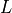
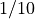

Beam Generator
Once the left and right pointers position is set (and the Y key is pressed on the left controller) the beam is drawned by:
myScriptBeam/beamPosition.cs: is responsible for the position the initial and final point of the beam as well as computing the correct orientation of the beam normal and deflection direction.myScriptBeam/meshGenerator.cs: is responsible for the generation of the mesh of the beam.myScriptBeam/baseSection.cs: is responsible for the cross section definition.
3D orientation
- Once the pointers are set the beam need to be oriented. The referred GameObject stores the following information that will be used also for the movement of constraints and loads:
beam normal
beam direction
deflection direction
initial and final points in world coordinates
Beam normal
Beam normal is computed as the distance between the two pointers. This is done in myScriptBeam/beamPositioning.cs.
Deflection direction
The deflection is computed as the cross product of the vertical global axis and the beam direction. This is done in myScriptBeam/beamPositioning.cs by accuting also for the relative position of the pointers:
public void ComputeDeflectionDirection()
{
UnityEngine.Vector3 globalDown = UnityEngine.Vector3.down;
// // Step 1: Project global down onto the plane perpendicular to beamDirection
UnityEngine.Vector3 bottomVector = UnityEngine.Vector3.ProjectOnPlane(globalDown, beamDirection).normalized;
// If it ends up pointing upward, flip it
if (UnityEngine.Vector3.Dot(bottomVector, UnityEngine.Vector3.down) > 0)
{
bottomVector = -bottomVector;
}
deflectionVector = bottomVector;
}
Mesh generation
The 3D beam is generated programmatically by defining:
The cross section
Triangulation along the beam direction
Initial and final faces
Cross-section
Given the beam length  and the cross-section sizes are combuted by considering a  ratio.
baseSection.cs allows for different cross-section shapes. For instance a squared cross section is return with repsect the computed sizes:
private static Vector3[] GetRectangleSection(float width, float height, BeamPositioning beamPositioning)
{
float halfWidth = width / 2;
float halfHeight = height / 2;
Vector3[] rectangle = new Vector3[]
{
new Vector3(-halfWidth, -halfHeight, 0), // Bottom left
new Vector3(halfWidth, -halfHeight, 0), // Bottom right
new Vector3(halfWidth, halfHeight, 0), // Top right
new Vector3(-halfWidth, halfHeight, 0) // Top left
};
return TransformSection(rectangle, beamPositioning);
}
Moreover, the section need to be oriented perpendicular to the beam section:
private static Vector3[] TransformSection(Vector3[] section, BeamPositioning beamPositioning)
{
Vector3 center = beamPositioning.GetBaseCenter();
Vector3 normal = beamPositioning.GetNormal();
Quaternion rotation = Quaternion.FromToRotation(Vector3.forward, normal);
for (int i = 0; i < section.Length; i++)
{
section[i] = rotation * section[i];
section[i] += center;
}
return section;
}
Beam mesh
// from meshGenerator.cs
void GenerateBeamMesh()
{
float extrusionLength = beamPositioning.GetBeamLength() / extrusionSteps;
Vector3[] baseSection = BaseSection.GetSection(sectionType, beamPositioning.GetBeamLength(), beamRatio, beamPositioning);
beamPositioning.SetBeamSectionSize(beamPositioning.GetBeamLength()/beamRatio);
mesh = GenerateTheMesh(baseSection, extrusionLength);
originalMesh = Instantiate(mesh);
}
To generate the beam the cross section (obtained from myScriptBeam/BaseSection.cs, with a fixed number of points pts ) is repeated extrusionSteps times along the beam direction such to haves total points. Sequential cross sections are trinagulated by connecting the points of the cross section with the points of the next cross section as follows:
// from meshGenerator.cs
private Mesh GenerateTheMesh(Vector3[] baseSection, float extrusionLength){
Vector3[] vertices = new Vector3[baseSection.Length * (extrusionSteps + 1)];
for (int i = 0; i <= extrusionSteps; i++)
{
for (int j = 0; j < baseSection.Length; j++)
{
vertices[i * baseSection.Length + j] = baseSection[j] + i * extrusionLength * beamPositioning.GetNormal();
}
}
int quads = extrusionSteps * baseSection.Length;
int[] triangles = new int[quads * 6];
int t = 0;
for (int i = 0; i < extrusionSteps; i++)
{
for (int j = 0; j < baseSection.Length; j++)
{
int current = i * baseSection.Length + j;
int next = i * baseSection.Length + (j + 1) % baseSection.Length;
int above = (i + 1) * baseSection.Length + j;
int aboveNext = (i + 1) * baseSection.Length + (j + 1) % baseSection.Length;
triangles[t++] = current;
triangles[t++] = next;
triangles[t++] = above;
triangles[t++] = next;
triangles[t++] = aboveNext;
triangles[t++] = above;
}
}
// Triangulate the base section
List<int> baseTriangles = EarClipping.Triangulate(baseSection, -beamPositioning.GetNormal());
// Triangulate the cap section
Vector3[] capSection = new Vector3[baseSection.Length];
for (int i = 0; i < baseSection.Length; i++)
{
capSection[i] = vertices[extrusionSteps * baseSection.Length + i];
}
List<int> capTriangles = EarClipping.Triangulate(capSection, -beamPositioning.GetNormal());
// Reverse the winding order for the cap
for (int i = 0; i < capTriangles.Count; i += 3)
{
// Swap two vertices to reverse the triangle's winding order
int temp = capTriangles[i];
capTriangles[i] = capTriangles[i + 1];
capTriangles[i + 1] = temp;
}
int[] allTriangles = new int[triangles.Length + baseTriangles.Count + capTriangles.Count];
triangles.CopyTo(allTriangles, 0);
for (int i = 0; i < baseTriangles.Count; i++)
{
allTriangles[triangles.Length + i] = baseTriangles[i];
}
for (int i = 0; i < capTriangles.Count; i++)
{
allTriangles[triangles.Length + baseTriangles.Count + i] = capTriangles[i] + extrusionSteps * baseSection.Length;
}
mesh = new Mesh
{
vertices = vertices,
triangles = allTriangles
};
mesh.RecalculateNormals();
mesh.RecalculateBounds();
GetComponent<MeshFilter>().mesh = mesh;
return mesh;
}
Triangulation
To ensure a perfect triangulation for the top and bottom cross section faces of the beam the ear clipping algorithm [1] is used. The triangulation is done in the myScriptBeam/EarClipping.cs script. The triangulation is done in the following steps:
The vertices of the cross section are sorted in a clockwise order.
The ear clipping algorithm is applied to the sorted vertices to generate the triangles.
The triangles are stored in a list and used to generate the mesh.
The mesh is generated using the triangles and the vertices of the cross section.
Deflection and deformed beam
The beam deflection is computed by updating the position of each point of the mesh based on its mathematica segment (i.e. the coefficient of the deflection formula).
void UpdateDeformedMesh(List<MathematicalSegment.Segment> segments){
Vector3[] vertices = originalMesh.vertices;
EQ_IV eq = new EQ_IV();
if (deformMainBeamQ){
for (int i = 0; i < vertices.Length; i++)
{
Vector3 basePoint = beamPositioning.GetBaseCenter();
Vector3 vertex = vertices[i];
Vector3 distance = vertex - basePoint;
float distanceAlongBeam = Mathf.Abs(Vector3.Dot(distance, beamPositioning.GetNormal()));
int segmentIndex = GetSegmentIndex(segments, distanceAlongBeam);
float deflection = eq.Get_v(distanceAlongBeam, segments[segmentIndex]);
vertices[i] = vertex - deflection*beamPositioning.GetDeflectionDirection();
}
}
mesh.vertices = vertices; // reassign it to the new mesh
mesh.RecalculateNormals();
mesh.RecalculateBounds();
GetComponent<MeshFilter>().mesh = mesh;
}
A similar structure is used to updated the visual of the bending moment.
Beam colors and segment identication
Each mathematical segmented is represeted by a different color using a node-based shader:
Shader "Custom/DistanceColorShader"
{
Properties
{
_ReferencePoint ("Reference Point", Vector) = (0, 0, 0, 1) // Reference point for distance calculations
_NumThresholds ("Number of Thresholds", int) = 4 // Number of thresholds (passed from C#)
}
SubShader
{
Tags { "RenderType"="Opaque" }
Pass
{
CGPROGRAM
#pragma vertex vert
#pragma fragment frag
#include "UnityCG.cginc"
struct appdata_t
{
float4 vertex : POSITION;
};
struct v2f
{
float4 pos : SV_POSITION;
float3 worldPos : TEXCOORD0;
};
float4 _ReferencePoint; // Position reference
int _NumThresholds; // Number of thresholds
float _Thresholds[10]; // Supports up to 10 distance thresholds
fixed4 _Colors[10]; // Supports up to 10 colors
v2f vert (appdata_t v)
{
v2f o;
o.pos = UnityObjectToClipPos(v.vertex);
o.worldPos = mul(unity_ObjectToWorld, v.vertex).xyz;
return o;
}
fixed4 frag (v2f i) : SV_Target
{
// Compute distance from reference point
float dist = distance(i.worldPos, _ReferencePoint.xyz);
// Find the correct color index using floor()
int index = 0;
for (int j = 0; j < _NumThresholds; j++)
{
if (dist >= _Thresholds[j])
index = j + 1;
}
// Clamp index to prevent out-of-bounds errors
index = clamp(index, 0, _NumThresholds - 1);
return _Colors[index]; // Return assigned color
}
ENDCG
}
}
}
Note that color can be assigned directly by the GUI to the meshGenerator.